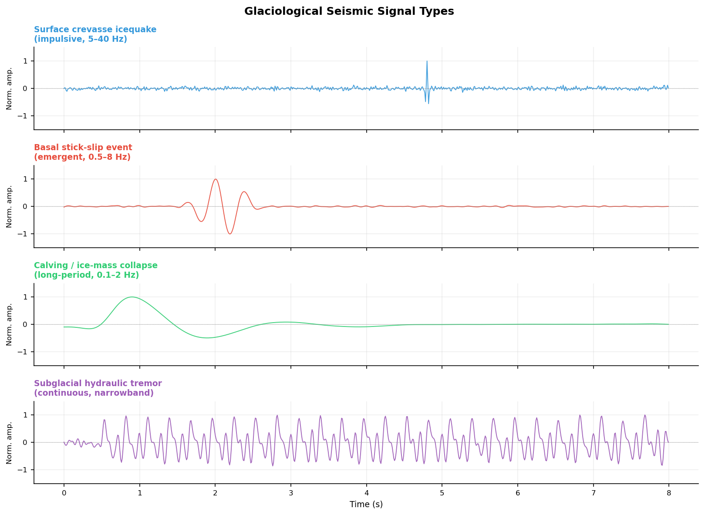
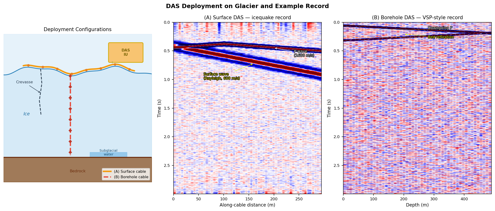

Glacier Seismology: Instruments, Arrays, and DAS Applications¶
Introduction¶
Glacioseismology uses seismic waves to detect and monitor glaciers, ice sheets, and ice shelves, and is the core tool for studying cryospheric dynamics. Ice bodies host diverse elastic wave sources — from millisecond-scale micro-icequakes to glacial earthquakes lasting tens of minutes — spanning a frequency range from 0.001 Hz to several hundred Hz.
Key challenges in modern glacioseismology:
- Polar environment: low temperatures (−60°C to 0°C), strong wind noise, and ice-surface motion make instrument deployment difficult
- Broadband requirement: high-frequency crevasse events (>10 Hz) coexist with long-period glacial earthquakes (<0.1 Hz)
- Sparse coverage: traditional networks have station spacings of tens of kilometres, insufficient for fine spatial resolution
- DAS revolution: distributed acoustic sensing upgrades "point" observation to "line" observation, with channel spacing as small as 1–5 m
Types of Glaciological Seismic Signals¶
| Signal type | Frequency (Hz) | Magnitude | Duration | Source mechanism |
|---|---|---|---|---|
| Surface icequake | 10–200 | Mw −3 to 0 | 0.1–2 s | Crevasse opening (tensile crack) |
| Basal icequake | 1–30 | Mw −2 to +1 | 0.2–5 s | Glacier-bed stick-slip motion |
| Deep englacial icequake | 1–20 | Mw −1 to +1 | 0.5–10 s | Thermal stress, phase change |
| Calving / overturning | 0.1–5 | Mw 1 to 4 | 10–300 s | Ice-tongue fracture, iceberg capsizing |
| Glacial earthquake | 0.01–0.1 | Mw 4.5–6.5 | 30–120 s | Rapid glacier/ice-shelf motion; centroid single force |
| Subglacial hydraulic tremor | 1–20 | Continuous | min–hours | Subglacial channel water flow |
| Subglacial-lake drainage | 0.01–1 | Mw 2–4 | Hours | Sudden outburst flood |

Figure 1: Synthetic waveforms of four typical glaciological seismic signals. From top: high-frequency impulsive surface crevasse; low-frequency emergent basal stick-slip; long-period calving/collapse; continuous narrowband subglacial hydraulic tremor. The wide variation in frequency content and duration demands broadband instruments and multi-window processing.Instrumentation¶
Broadband Seismometers¶
Broadband seismometers are essential for capturing glacial earthquakes and long-period calving signals.
| Model | Bandwidth | Sensitivity | Glaciological suitability |
|---|---|---|---|
| Nanometrics Trillium Compact | 0.008–100 Hz | 1500 V·s/m | ★★★★☆ lightweight, good low-T performance |
| Güralp CMG-40T | 0.03–50 Hz | 800 V·s/m | ★★★☆☆ heavier, better on bedrock |
| Streckeisen STS-2 | 0.008–50 Hz | 1500 V·s/m | ★★☆☆☆ large, fixed-station use |
| REF TEK 151B | 0.02–50 Hz | 1500 V·s/m | ★★★★☆ polar-rated version available |
Ice-surface deployment issues:
- Ice-surface tilt → tilt noise can exceed signal by 10 dB at 0.01–1 Hz
- Solution: gimbal mount + post-processing tilt-to-acceleration correction
- Ice flow velocity 1–100 m/yr → without GPS, long-term source-location errors can reach tens of metres
Short-Period Geophones¶
Geophones are lightweight and inexpensive — the workhorse for active-source surveys and dense passive arrays.
| Model | Natural freq. | Sensitivity | Typical use |
|---|---|---|---|
| Sercel L-22 | 2 Hz | 88 V/m/s | Refraction/reflection surveys |
| Geospace GS-11D | 4.5 Hz | 28 V/m/s | Dense ice-surface arrays |
Geophone limitation
A 4.5 Hz geophone has rapidly falling sensitivity below its natural frequency, and cannot record glacial earthquakes (<0.1 Hz) or large calving events (<2 Hz). Broadband seismometers must be used alongside geophones when multi-signal-type monitoring is required.
Acquisition Notes¶
Battery performance in cold: LiFePO₄ batteries retain 70–80% capacity at −40°C; standard LiCoO₂ drops to 50% at −20°C.
GPS clock accuracy: snow-covered GPS antennas can accumulate clock errors >1 ms, translating to >3.7 m source-location error via P-wave velocity (~3700 m/s).
Coupling: freeze-thaw cycles break geophone-to-ice coupling. Fix: drill an ice shaft, insert a spike, and allow it to refreeze.
Seismic Array Methods¶
Array Geometry and Design¶
| Geometry | Advantages | Application |
|---|---|---|
| Linear array | High resolution along cable; F-K friendly | Glacier-flow-direction monitoring, natural DAS geometry |
| Circular array | Uniform back-azimuth coverage | Omni-directional source location |
| L-shaped array | 2-D imaging at low cost | Temporary field deployments |
| Sparse icecap network | Wide areal coverage | Ice-sheet-scale monitoring |
Key design parameters: - Minimum spacing \(d_\min\) → maximum resolvable wavenumber \(k_\max = 1/(2d_\min)\) - Aperture \(D\) → slowness resolution \(\Delta p \approx 1/(D \cdot f_\max)\)
Beamforming¶
Delay-and-sum beam power for an \(N\)-station array:
where \(\mathbf{p}\) is the slowness vector and \(\mathbf{r}_i\) is the station position. The maximum gives the apparent velocity and back-azimuth of the incoming wavefield.
For glaciological signals: - P-wave apparent velocity: \(v_P \approx 3500\)–\(3900\) m/s in ice (depends on temperature and fabric anisotropy) - Rayleigh wave: \(v_R \approx 0.92\,v_S \approx 1700\) m/s at the ice surface - Very slow energy (<500 m/s) typically indicates crevasse surface waves or subglacial water flow
TDOA Location (Hyperbolic)¶
Travel-time difference between stations \(i\) and \(j\) for source \(\mathbf{x}_s\):
Each station pair defines a hyperboloid. Three or more stations jointly constrain \(\mathbf{x}_s\).
Velocity heterogeneity in ice
P-wave velocity in ice varies by ±5–10% with temperature and crystal fabric. The shallow firn layer (\(v_P \approx 800\) m/s) differs dramatically from glacier ice (\(v_P \approx 3700\) m/s). Accurate icequake location requires a velocity model derived from active-source surveys or passive DAS imaging.
Moment Tensor Inversion for Icequakes¶
Ice crevasses are dominated by tensile opening. Their moment tensor has a characteristic form with a large positive isotropic (ISO) component:
Basal stick-slip events, by contrast, are dominated by double-couple (DC) shear components. Separating the ISO and DC fractions distinguishes ice fracture from basal sliding.
DAS Applications in Glaciology¶
Deployment Configurations¶
DAS measures the phase shift of Rayleigh backscatter continuously along the fibre, turning the whole cable into thousands of seismic channels (see DAS Fundamentals). Two principal configurations exist on glaciers:
Configuration A — surface cable
- Cable laid on the ice surface, typically buried 0.1–0.5 m to reduce wind noise and thermal strain
- Sensitive to both body waves (P/S) and surface waves (Rayleigh)
- Ice flow displaces the cable over time → periodic GPS surveys of cable position required
- Typical applications: surface-crevasse monitoring, 2-D passive noise imaging
Configuration B — borehole cable
- Cable inserted into a hot-water-drilled vertical borehole and frozen in place
- Equivalent to a VSP geometry (see VSP Principles); separates downgoing and upgoing waves
- Highly sensitive to basal signals (bed friction, subglacial meltwater)
- Typical applications: ice-thickness determination, basal sliding monitoring, englacial velocity profiles

Figure 2: (Left) Glacier DAS deployment schematic — orange: surface cable (A); red dashed: borehole cable (B); yellow box: DAS interrogator unit. Crevasse and subglacial water features are labelled. (Middle) Surface DAS icequake record showing fast P-wave and slower Rayleigh surface wave. (Right) Borehole DAS VSP-style record with clear downgoing P and bed reflection at opposite apparent velocities.Englacial Structure Imaging¶
Passive noise cross-correlation → velocity profile
Cross-correlating continuous DAS recordings between any two channels:
extracts the inter-channel Rayleigh-wave Green's function, from which dispersion curves and \(V_S(z)\) are inverted (see Surface Wave Methods).
Typical ice velocity structure:
| Layer | \(V_P\) (m/s) | \(V_S\) (m/s) | Notes |
|---|---|---|---|
| Firn (0–100 m) | 400–2000 | 200–1000 | Density-controlled rapid increase |
| Cold ice (>100 m) | 3700–3900 | 1830–1940 | Fabric anisotropy (±5%) |
| Temperate ice | 3500–3700 | 1800–1850 | Contains liquid water, lower velocity |
| Subglacial sediment | 1800–2500 | 300–900 | Saturated soft layer, strong reflector |
Elastic anisotropy of ice
Polycrystalline ice has a monoclinic elastic tensor; preferred orientation of \(c\)-axes (crystal fabric) creates P-wave velocity contrasts of 3–5% between vertical and horizontal directions. This affects DAS-based Q inversion (which requires accurate velocity corrections) and CWI (velocity changes must be distinguished from fabric effects).
Active-source ice-thickness measurement
DAS + small surface source (shot or hammer) forms a high-density reflection profile: $$ H = \frac{vP \cdot t\text{TWT}}{2} $$ where \(t_\text{TWT}\) is the two-way travel time of the bed reflection. DAS channel spacing of 1–5 m far exceeds the resolution of conventional geophone arrays (25–50 m).
Icequake Detection and Precise Location¶
The high channel density of DAS improves icequake location accuracy from tens of metres (traditional sparse array) to sub-metre scale.
Full-waveform cross-correlation location workflow: 1. Template matching across continuous DAS records to detect candidate events 2. Cross-correlation of each channel against a template to obtain phase-shift arrival times 3. Grid search or gradient descent to solve for source coordinates \((x, y, z)\) 4. Exploit the known 3-D cable geometry to constrain source depth
DAS location advantage
A surface DAS array with \(N_\text{ch} \sim 1000\) channels provides highly redundant arrival-time constraints. Even if 50% of channels are corrupted by surface noise, hundreds of clean channels remain, enabling location residuals < 1 m under ideal conditions.
Glacier Motion and Basal Sliding¶
Stick-slip event detection
Basal stick-slip motion produces rapid co-seismic displacements (Δd ≈ mm to cm). DAS measures dynamic axial strain:
Basal stick-slip generates low-frequency strain pulses coherent across all channels (analogous to the large Whillans Ice Stream stick-slip events, but without conventional high-frequency radiation).
Velocity change monitoring via CWI
Coda Wave Interferometry on repeated noise cross-correlations detects minute velocity changes:
Ice velocity \(v\) correlates with temperature, liquid water content, and porosity: - Summer warming → \(\delta v/v < 0\) (~0.1–0.5%/°C) - Increased basal meltwater → velocity decrease may precede basal acceleration - DAS + CWI has potential for early warning of glacier instability
Key Case Studies¶
| Site | Institution | Deployment | Key finding | Reference |
|---|---|---|---|---|
| Rhône Glacier, Switzerland | ETH Zürich | 2 km surface | Crevasse location <1 m; englacial \(V_S\) profile | Fichtner et al. 2023 |
| Store Glacier, Greenland | GEUS/Bristol | 600 m borehole | Basal melt imaging, bed-reflector character | Walter et al. 2020 |
| Malaspina Glacier, Alaska | USGS | 5 km surface | Surface-wave dispersion, ice-surface strain rate | Gimbert et al. 2021 |
| Whillans Ice Stream, Antarctica | Consortium | Surface | Spatial propagation of stick-slip events | Lipovsky et al. 2019 |
| Argentière Glacier, France | IPGP | Borehole | CWI seasonal velocity changes in ice | Nanni et al. 2021 |
Integration with Conventional Seismometers¶
DAS has a fundamental limitation: it measures only axial strain along the cable. Three-component motion (vertical and transverse, critical for moment tensors) requires supplementary point seismometers. A typical combined deployment strategy:
DAS (dense linear) → spatial coverage / arrival-time constraints / distributed strain
Broadband seismometers (sparse) → low-frequency content / 3-component / moment tensor
Geophones (intermediate) → high-frequency detail / active-source surveys
Complementary capabilities:
| Capability | Broadband seismometer | Geophone | DAS |
|---|---|---|---|
| Low-frequency (<1 Hz) | ★★★★★ | ★ | ★★ |
| High-frequency (>50 Hz) | ★★★ | ★★★★ | ★★★★★ |
| Spatial resolution | ★★ | ★★★ | ★★★★★ |
| Three-component | ★★★★★ | ★★★ | ★ (axial only) |
| Polar deployment cost | High | Medium | Medium (cable cost scales with length) |
| Long-term unattended | ★★★★ | ★★★ | ★★★★★ |
Processing Workflow Overview¶
Continuous raw records
│
├─ Denoising (STA/LTA detector; spectral whitening)
│
├─ Icequake detection (STA/LTA + template matching + ML classification)
│
├─ Phase picking (cross-correlation; AIC auto-picker)
│
├─ Source location (double-difference / grid search / gradient descent)
│
├─ Source mechanism (P-wave polarity, moment tensor inversion)
│
├─ Velocity structure (passive noise cross-correlation → dispersion → Vs(z))
│
└─ Time-lapse monitoring (CWI: δv/v; template matching: activity rate)
References¶
- Fichtner, A., Villaseñor, A., & Blom, N. (2023). Distributed acoustic sensing for seismic monitoring of glacier dynamics. Nature Communications, 14, 1–12.
- Aster, R. C., & Winberry, J. P. (2017). Glacial seismology. Reports on Progress in Physics, 80(12), 126801.
- Podolskiy, E. A., & Walter, F. (2016). Cryoseismology. Reviews of Geophysics, 54(4), 708–758.
- Lindsey, N. J., Rademacher, H., & Ajo-Franklin, J. B. (2020). On the broadband instrument response of fiber-optic DAS arrays. Journal of Geophysical Research: Solid Earth, 125(2), e2019JB018145.
- Gimbert, F., Nanni, U., Roux, P., Helmstetter, A., Lecointre, A., & Fettweis, X. (2021). A multi-physics experiment with a temporary dense seismic array on the Argentière glacier, French Alps: the RESOLVE project. Seismological Research Letters, 92(2A), 1132–1147.
- Lipovsky, B. P., & Dunham, E. M. (2016). Tremor during ice-stream stick slip. The Cryosphere, 10(1), 385–399.
- Walter, F., Röösli, C., & Greenwood, A. (2020). Borehole seismology and the study of the glacial environment. The Cryosphere, 14(1), 357–380.
- Nanni, U., Gimbert, F., Roux, P., & Lecointre, A. (2021). Observing the subglacial hydrology of the Argentière Glacier using ambient seismic noise. The Cryosphere, 15(11), 5003–5020.
- Winberry, J. P., Anandakrishnan, S., Alley, R. B., Bindschadler, R. A., & King, M. A. (2009). Basal mechanics of ice streams: insights from the stick-slip motion of Whillans Ice Stream, West Antarctica. Journal of Geophysical Research: Earth Surface, 114(F1).